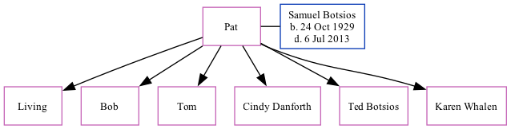

Pat Botsios
[ Home ] | [ Calendar ] | [ Surnames Index ] | [ Family History ]Pat and married Samuel Botsios (with whom she had 6 children: Susan M, Bob, Tom, Cindy, Ted and Karen, along with 1 surviving child) on Apr 18, 19511.
Citations
- U.S., Obituary Collection, 1930-Current Ancestry.com Operations Inc (See newspaper information provided with each entry.)
Family Tree
Generated by ged2site. Last updated on Sep 9, 2024